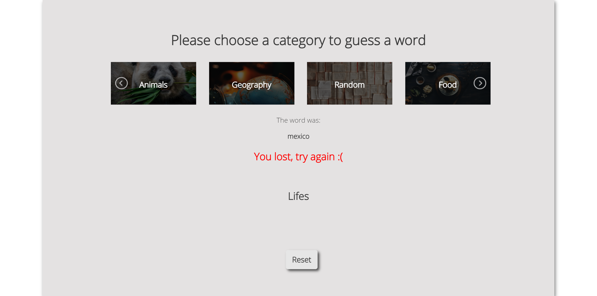
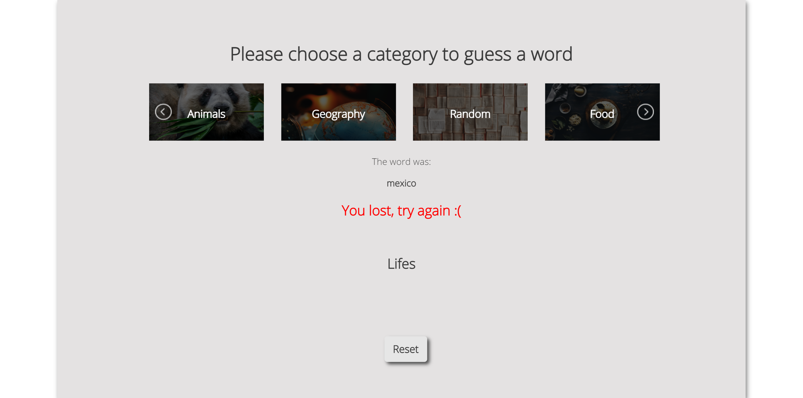

JAVASCRIPT PROJECT
WordGuesser
For this project i was so determined to do it, i spend a lot of time trying and failing but in the end it was worth it and i was proud of myself. In this project we have a slider with categories and words to be guessed. We have a keyboard with letters from where you can choose to guess the word.
 
